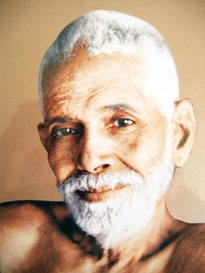

<?xml version="1.0" encoding="UTF-8"?><rss version="2.0"
	xmlns:content="http://purl.org/rss/1.0/modules/content/"
	xmlns:wfw="http://wellformedweb.org/CommentAPI/"
	xmlns:dc="http://purl.org/dc/elements/1.1/"
	xmlns:atom="http://www.w3.org/2005/Atom"
	xmlns:sy="http://purl.org/rss/1.0/modules/syndication/"
	xmlns:slash="http://purl.org/rss/1.0/modules/slash/"
	>

<channel>
	<title>DreamLab</title>
	<atom:link href="../feed/" rel="self" type="application/rss+xml" />
	<link>.</link>
	<description>Dedicated to bringing back the language of dreams</description>
	<lastBuildDate>Sat, 19 Mar 2016 13:18:45 +0000</lastBuildDate>
	<language>en-AU</language>
	<sy:updatePeriod>hourly</sy:updatePeriod>
	<sy:updateFrequency>1</sy:updateFrequency>
	<generator>https://wordpress.org/?v=4.6.1</generator>
	<item>
		<title>The Exhausting Relationship Between Depression and Dreaming</title>
		<link>./867-2/</link>
		<comments>./867-2/#respond</comments>
		<pubDate>Sat, 19 Mar 2016 13:05:29 +0000</pubDate>
		<dc:creator><![CDATA[ilana laps]]></dc:creator>
				<category><![CDATA[Blog]]></category>

		<guid isPermaLink="false">./?p=867</guid>
		<description><![CDATA[As a psychotherapist, I am not the obvious first choice for someone suffering with depression. Psychology offers effective techniques, as well as a rebate, so it&#8217;s a solid place to start. The numerous depressed clients who have sought me out, however, are those who haven&#8217;t found relief in the mainstream frameworks, and have heard that [&#8230;]]]></description>
				<content:encoded><![CDATA[<p>As a psychotherapist, I am not the obvious first choice for someone suffering with depression. Psychology offers effective techniques, as well as a rebate, so it&#8217;s a solid place to start. The numerous depressed clients who have sought me out, however, are those who haven&#8217;t found relief in the mainstream frameworks, and have heard that I work with dreams.</p>
<p>There is an unfortunate relationship between depression and sleep cycles; one which all too often heightens suffering. Among other symptoms, dreams can be more intense, relentless and disturbing. Anti-depressants &#8211; which in many cases save and improve lives &#8211; also actively repress the REM cycle, and flatten out waking affect. The energy of these &#8216;missing&#8217; emotions remains in the system, unprocessed, and can lead to breakthrough nightmares, or feelings of frustration.</p>
<p>A very hopeful body of research has been performed by Dr. Rosalind Cartwright, on the dreams of people living with depression. Like most other researchers, she found that dreams directly regulate mood, however her focus on depression also revealed that recovery or alleviation of symptoms can be predicted through the monitoring of dreams.</p>
<p>The following article, from my beloved Brain Pickings, will be of particular interest to those suffering with depression, and who want to understand what is going on in your minds at night, and why you often wake feeling so exhausted. Often this is blamed on intense dreaming, but it&#8217;s actually disturbances in other sleep phases that impact your body&#8217;s ability to rest and repair. When it comes to depression, research suggests that dreams are on your side.</p>
<blockquote data-secret="ySxVS9whHs" class="wp-embedded-content"><p><a href="https://www.brainpickings.org/2012/08/13/the-twenty-four-hour-mind-rosalind-cartwright/">The Science of Sleep: Dreaming, Depression, and How REM Sleep Regulates Negative Emotions</a></p></blockquote>
<p><iframe class="wp-embedded-content" sandbox="allow-scripts" security="restricted" style="display:none;" src="https://www.brainpickings.org/2012/08/13/the-twenty-four-hour-mind-rosalind-cartwright/embed/#?secret=ySxVS9whHs" data-secret="ySxVS9whHs" width="600" height="338" title="Embedded WordPress Post" frameborder="0" marginwidth="0" marginheight="0" scrolling="no"></iframe></p>
]]></content:encoded>
			<wfw:commentRss>./867-2/feed/</wfw:commentRss>
		<slash:comments>0</slash:comments>
		</item>
		<item>
		<title>Emotional Pain is the Root Cause of Addiction</title>
		<link>./emotional-pain-is-the-root-cause-of-addiction/</link>
		<comments>./emotional-pain-is-the-root-cause-of-addiction/#respond</comments>
		<pubDate>Sun, 12 Apr 2015 10:21:53 +0000</pubDate>
		<dc:creator><![CDATA[ilana laps]]></dc:creator>
				<category><![CDATA[Blog]]></category>

		<guid isPermaLink="false">./?p=805</guid>
		<description><![CDATA[In a few years of working occasionally with addicted clients, some in denial about their addiction, I have never had success in tackling the addiction head-on. Compassionately following their pain, however, and supporting a person to be with their pain, has been excruciating enough to be powerful. Over time, often slowly, the need for numbing [&#8230;]]]></description>
				<content:encoded><![CDATA[<p>In a few years of working occasionally with addicted clients, some in denial about their addiction, I have never had success in tackling the addiction head-on.</p>
<p>Compassionately following their pain, however, and supporting a person to be with their pain, has been excruciating enough to be powerful. Over time, often slowly, the need for numbing decreases as feeling the pain becomes more bearable. Where there isn&#8217;t a willingness or capacity to be with the pain, the addiction remains a refuge.</p>
<p>When approaching deep pain, compassion is the only way in. In my own healing, the moments I remember most clearly are those where I&#8217;ve experienced genuine compassion from another &#8211; tiny islands of safety can stop us from drowning.</p>
<p>I like the voice of Dr. Gabor Mate in this video. I can hear and feel his compassion, and it refuels mine.</p>
<p>Watch Dr. Mate&#8217;s beautiful 3-minute video by following this link:  <a href="http://reset.me/video/emotional-loss-trauma-are-the-root-cause-of-addiction/">Emotional Loss &amp; Trauma are the Root Cause of Addiction</a></p>
]]></content:encoded>
			<wfw:commentRss>./emotional-pain-is-the-root-cause-of-addiction/feed/</wfw:commentRss>
		<slash:comments>0</slash:comments>
		</item>
		<item>
		<title>On Speaking to a Men&#8217;s Bereavement Group About Visitation Dreams</title>
		<link>./on-speaking-to-a-mens-group-about-visitation-dreams/</link>
		<comments>./on-speaking-to-a-mens-group-about-visitation-dreams/#respond</comments>
		<pubDate>Fri, 10 Apr 2015 09:04:43 +0000</pubDate>
		<dc:creator><![CDATA[ilana laps]]></dc:creator>
				<category><![CDATA[Blog]]></category>

		<guid isPermaLink="false">./?p=796</guid>
		<description><![CDATA[My heart was racing last night as I approached the boardroom where I was to give a two-hour talk on &#8220;The Role of Dreams in Grieving Well.&#8221; It is not the subject that frightens me. &#8216;Grieving Well&#8217; is a concept I&#8217;ve been developing for the past year, and I’m feeling moved now to explore it [&#8230;]]]></description>
				<content:encoded><![CDATA[<p>My heart was racing last night as I approached the boardroom where I was to give a two-hour talk on &#8220;<a title="The Role of Dreams in Grieving Well" href="../workshop/dreams-in-grief-bereavement/">The Role of Dreams in Grieving Well</a>.&#8221; It is not the subject that frightens me. &#8216;Grieving Well&#8217; is a concept I&#8217;ve been developing for the past year, and I’m feeling moved now to explore it with others. What frightens me is anticipation of my audience: a long-running suicide-bereaved men&#8217;s group.</p>
<p>I&#8217;ve journeyed professionally alongside suicide survivors for the past year. When working with, or experiencing, loss by suicide, we are always piercingly out of our depths. But I love this work, and I don&#8217;t shy away from grief&#8217;s landscapes. My heart is steady on that count.</p>
<p>It&#8217;s not the grief, and it&#8217;s not the realities of suicide. What frightens me, I confess to the facilitator, is speaking about dreams to a room of men. I&#8217;ve never been invited into a men&#8217;s group before. I&#8217;ve been told they&#8217;ve had only one other female presenter in many years. And in all those years, they&#8217;ve never spoken about their dreams.</p>
<p>How real can I be with these men? How real can they be with me? How do I get them talking openly about their dreams, so tender and intangible? How do we get comfortable in this mutually foreign territory? I feel different to them; an outsider. How do I build safety for all of us in such foreign territory?</p>
<p>&#8220;It&#8217;s going to be great, more than great&#8230;&#8221;, the facilitator says.</p>
<p>I walk in. With each &#8216;hello&#8217; I feel better, and sadder, and grateful to the dreams I know are hidden in this room. The men are kind, welcoming, and unflustered. They have lost sons, brothers, and a father. I let it sink in. They have lost sons, brothers, and a father.</p>
<p>&#8220;You don&#8217;t walk on&#8221;, one tells me. &#8220;You just go on.&#8221;</p>
<p>I let it sink it. &#8220;You don&#8217;t walk on. You just go on.&#8221; I feel at the edge of all experience. We are all there, there is nowhere to go.</p>
<p>I am in my body now. There&#8217;s no pretence. There&#8217;s no show. We&#8217;re just breathing together, humans. I let my notes go. I just want to sit with them a while. But I&#8217;m there for a reason. I begin to share what I believe in&#8230; Everyone here is trying to reconcile with the irreconcilable&#8230; It is an impossible task&#8230; But the heart breaks&#8230; open. And as long as we can help the heart to break *open*, we are on the healing path&#8230; Dreams are your ally, they are bound to your heart&#8230; Dreams are a natural part of our response to grief; they are part of our natural healing mechanism&#8230; Grief is complex and creative; we all get stuck without knowing why, sometimes for years&#8230; Your dreams are always pointing to where you&#8217;re stuck, and what&#8217;s available to you right now&#8230; Dreams are the only place where we really, really, really tell the truth.</p>
<p>One man&#8217;s eyes are like glasses of water against a brown sky. He tells us that he recently hugged his fallen son in his dream. &#8220;We don&#8217;t usually hug,&#8221; he whispers, but through the dream he feels his son&#8217;s warm body, his puffy hand. His son cries on his shoulder, and he comforts his son. &#8220;Until this moment, I have never told anyone about my dreams. Not even my wife. She wouldn&#8217;t want to know.&#8221;</p>
<p>Another man shares that he&#8217;s been a spiritual sceptic his whole life. But now his son occasionally comes to him in his dreams, and gives him advice on day to day things, sometimes delivering premonitions. &#8220;I don&#8217;t know, I don&#8217;t know&#8230; it just feels so good to feel his affirmation.&#8221; He pulls his hat lower, clasps his hands over his mouth.</p>
<p>A man who lost his father says that he denied feeling any blame, until a dream forced him to acknowledge his feelings of guilt and regret. He says he was trying to be strong for his mother and brother. He didn&#8217;t want them to blame themselves, so he set an example&#8230; &#8220;but in the dream, I keep wishing I had found the gun. I realise now, these feelings are normal. They&#8217;re just part of it. I can let myself have them.&#8221; (His father&#8217;s death did not involve a gun, but this was the metaphor used in the dream).</p>
<p>As we closed our evening, one of the more seasoned men calls out to the man who had dreamed of hugging his son: &#8220;I haven&#8217;t seen you here in a long time, over a year I think. I&#8217;m glad you came back.&#8221; The man replies: &#8220;I saw the subject was dreams. So I came. I never told my dreams before.&#8221;</p>
<p>None of these men had spoken about their dreams before. One said that he&#8217;d learned that it was okay to talk about his dreams, and to encourage others to talk about them. Others felt they would still keep their dreams secret, but felt they could now speak about them in the men&#8217;s group or to their counsellors.</p>
<p>As I drove home last night, I felt immensely honoured, and emotional. Honoured that I get to witness the deep healing touch of dreams on our wounded but striving selves. Emotional that the love we are capable of struggles so profoundly to find its way to others, and to our own selves.</p>
<p>Dreams are a great connector. They reveal our essential humanity, and when we feel the humanity of another, we naturally feel connected to them. I would like to think that at least some of these men experienced a deeper level of connection with each other last night. After two hours, I can honestly say I cared for and felt connected to the men in that group, particularly those who had let us look through the window of their dreams, and feel the humanity inside, just waiting to be touched.</p>
<p>Do you have dreams you have never spoken with anyone about? Have you had visitation dreams, where those who have died come to visit you, to touch you again, to deliver messages, or receive messages from you?</p>
<p>Please share your dreams here, as you are not alone, and we have only to allow ourselves to let our dreams heal.</p>
]]></content:encoded>
			<wfw:commentRss>./on-speaking-to-a-mens-group-about-visitation-dreams/feed/</wfw:commentRss>
		<slash:comments>0</slash:comments>
		</item>
		<item>
		<title>Dreams in Counselling &#038; Psychotherapy</title>
		<link>./dreams-in-counselling-psychotherapy/</link>
		<comments>./dreams-in-counselling-psychotherapy/#respond</comments>
		<pubDate>Sun, 22 Mar 2015 12:23:52 +0000</pubDate>
		<dc:creator><![CDATA[ilana laps]]></dc:creator>
				<category><![CDATA[Blog]]></category>

		<guid isPermaLink="false">./?p=763</guid>
		<description><![CDATA[Bees multiply and swarm in the bedroom of a remote chateau. A man’s legs fall from beneath him on the way to the bathroom. A female assassin targets friendly passers-by. Military men force a woman under water in a V-shaped canal. These are all scenes from dreams that became enormously important to the clients who [&#8230;]]]></description>
				<content:encoded><![CDATA[<p>Bees multiply and swarm in the bedroom of a remote chateau. A man’s legs fall from beneath him on the way to the bathroom. A female assassin targets friendly passers-by. Military men force a woman under water in a V-shaped canal.</p>
<p>These are all scenes from dreams that became enormously important to the clients who brought them into therapy. Understanding these images marked turning points in their self-awareness, and became foundational to their therapeutic process.</p>
<p>Had my clients not shared their dreams with me, it may have taken months to discover what was available to them right now. Instead, over the coming months, they repeatedly returned to and built on their insights, finding validation, courage and direction in their own dream material.</p>
<h3><strong>Dreams as Your &#8220;Inner Therapist&#8221;</strong></h3>
<p>Dreams are like having an &#8216;inner therapist&#8217;, reflecting a deeper awareness back to you every night. Your dreams connect today&#8217;s emotions with past experiences that made you feel a similar way &#8211; precisely the therapeutic technique used by counsellors and psychologists. So why do we ignore our dreams, yet seek out therapy?</p>
<p>Only because we have forgotten how to understand our dreams.</p>
<p>Your dreams communicate in a language of emotionally charged images. They express the complex truth of your emotional state of being, a truth that is intertwined with past experiences and forgotten memories. Interpreting the meaning of your dreams can reveal the inner workings of your true self.</p>
<p>The rational thinking of our waking hours buries your more difficult emotions, creating a reservoir of unexpressed feelings that must find other ways of expressing themselves. Anxiety, anger, depression and emotional numbness can all be traced back to repressed emotions.</p>
<p>Emotional honesty is so important to the health of humans that we have evolved to dream four to six times every night. Our dreams are the only place where we can express our feelings as they really are, without the judgment of others, or harshest of all, the judgment of our own inner-critic.</p>
<p>Dreams are therefore your most honest inner landscape, the visual arena where you process the emotional impressions of your day, and weave them into the story of your life. Dreams integrate the emotional imprint of new experiences into your long-term memory, by connecting them with past experiences that made you feel the same way. Your dream self has a perfect memory of every experience you have ever had; your waking self comprehends only the tip of the iceberg.</p>
<h3><strong>Benefits of Dream Analysis </strong></h3>
<p>Used professionally, analysing dreams offers a direct path to the unconscious emotions, beliefs and memories that are impacting your daily life. One dream understood can circumvent weeks or months of counselling by carrying us straight to the heart of things; somewhere difficult to arrive through talk therapy alone. Dream therapy also has the advantage of perfect timing. The content of last night&#8217;s dream is perfectly relevant to this moment in your life. So working on that dream as soon as possible provides the greatest chance of meaningful insight.</p>
<p>Dreams are for me an unparalleled therapeutic tool. Often after seeing a client for months, a single dream comes that changes the course of our therapy. Even more common is the person who doesn&#8217;t remember their dreams, but who within days of our meeting has a dream that feels important. This is easily explained: your dream self knows you are listening.</p>
<p>Dream therapy has helped clients understand their anxiety, uncoil restlessness and treat emotional numbness and meaningless. Clients discover not only where they may be stuck, but also come face to face with opportunities they had previously failed to see for meaningful change. It&#8217;s important to note, therefore, that once a dream is understood, there remains work to be done. Namely, the pivotal work of integrating unconscious material into your waking life. Without this action phase, dream work remains largely a curiosity.</p>
<p>Ultimately, dreams can be a great catalyst for growth in your life. They hold your most authentic truth, and reveal it to you every night in an attempt to make it conscious. Therapeutically, your greatest opportunity for healing and growth lies in coming into relationship with this truth, and making new decisions with self-awareness that cannot help but transform you.</p>
<h3><strong>Carl Jung &amp; Dream Analysis</strong></h3>
<p>Carl Jung, a psychiatrist and disciple of Sigmund Frued, changed the course of psychotherapy through his focus on the unconscious mind, and therefore on dream work. Clients brought their dreams to Jung every week, and for over 60 years he worked on his his own dreams and took the art of dream work to new depths for modern man. After interpreting many hundreds of thousands of the dreams over the course of his life, he said the only thing he regretted was not spending more time studying dreams<strong>.</strong></p>
<p>Not every dream reveals itself. And some dreams are so epic they can take years to unfurl. However, for the most part, dreams are accessible and highly therapeutic to understand. They are so much part of our nature that even after hundreds of years of being forgotten, their language can be easy remembered, and they welcome us back by becoming more vivid and increasingly easier to recall.</p>
<h3><strong>Dream Workshops &amp; Private Dream Work</strong></h3>
<p>To help bring back the forgotten language of dreams, I established Dream Lab in 2010 to make a transformative dream education accessible to anyone on weekends throughout the year. We use a Jungian Analysis method to interpret your dreams.</p>
<p>For <span style="text-decoration: underline;"><a title="Private Dream Therapy" href="../private-dreamtherapy/">private dream therapy</a></span> and counselling, please <a title="Contact" href="../contact/">contact me</a> to discuss whether private sessions are right for you.</p>
]]></content:encoded>
			<wfw:commentRss>./dreams-in-counselling-psychotherapy/feed/</wfw:commentRss>
		<slash:comments>0</slash:comments>
		</item>
		<item>
		<title>Dream Documentary: An Interview with Ilana</title>
		<link>./dream-documentary/</link>
		<comments>./dream-documentary/#comments</comments>
		<pubDate>Thu, 01 Jan 1970 00:00:00 +0000</pubDate>
		<dc:creator><![CDATA[ilana laps]]></dc:creator>
				<category><![CDATA[Blog]]></category>

		<guid isPermaLink="false">./post-with-video/</guid>
		<description><![CDATA[]]></description>
				<content:encoded><![CDATA[<div class="fount_regular_row fount_row"><div class="wpb_row vc_row-fluid"><div class="small-12 columns"><div class="prk_inner_block columns small-centered clearfix">
	<div class="vc_span12 wpb_column column_container">
		<div class="wpb_wrapper">
			
	<div class="wpb_text_column wpb_content_element ">
		<div class="wpb_wrapper">
			<p><strong>Filmed by Bachelor Productions for their documentary: &#8220;Night I&#8221;</strong></p>

		</div> 
	</div> 
		</div> 
	</div> 
</div></div></div></div><div class="clearfix"></div>
]]></content:encoded>
			<wfw:commentRss>./dream-documentary/feed/</wfw:commentRss>
		<slash:comments>1</slash:comments>
		</item>
		<item>
		<title>Ramana Maharshi: &#8220;All That We See is a Dream&#8230;&#8221;</title>
		<link>./all-we-see-is-a-dream/</link>
		<comments>./all-we-see-is-a-dream/#respond</comments>
		<pubDate>Thu, 24 Jan 2013 00:00:00 +0000</pubDate>
		<dc:creator><![CDATA[ilana laps]]></dc:creator>
				<category><![CDATA[Blog]]></category>

		<guid isPermaLink="false">./post-with-image/</guid>
		<description><![CDATA[]]></description>
				<content:encoded><![CDATA[<div class="fount_regular_row fount_row"><div class="wpb_row vc_row-fluid"><div class="small-12 columns"><div class="prk_inner_block columns small-centered clearfix">
	<div class="vc_span12 wpb_column column_container">
		<div class="wpb_wrapper">
			
	<div class="wpb_text_column wpb_content_element ">
		<div class="wpb_wrapper">
			<div class="paragraph">
<div id="attachment_323" style="width: 215px" class="wp-caption alignleft"><p class="wp-caption-text">Ramana Maharshi 1979 ~ 1950</p></div>
<p><em>India&#8217;s beloved Sage, Ramana Maharshi, the Buddha of Southerm India, would discuss the nature of dream- and waking-reality with his followers. </em></p>
<p><em>Ramana is on</em><em>e of my most valued teachers, and in January of 2012, I travelled to live at the foot of the sacred mountain where meditated and shared teachings for over 50 years: Arunachala. It remains one of the most transformative experiences of my life.</em></p>
<p>Here are two excerpts from his teachings on how dream consciousness can help reveal to us the nature of ultimate reality.</p>
</div>
<div class="paragraph">
<p><strong>BHAGAVAN* ON DREAM AND WAKING-REALITY</strong><br />
*<span style="font-size: xx-small; line-height: 15px;">(</span><em>The name &#8216;Bhagavan&#8217; was used in reverence by Ramana&#8217;s devotees, meaning Supreme Being or Realized Being in Sanskrit.) </em></p>
<p>Another visitor told Bhagavan that some of his dream experiences stood very firmly rooted in his mind, while others were not remembered at all. Bhagavan remarked, “All that we see is a dream, whether we see it in the dream state or in the waking state. On account of some arbitrary standards about the duration of experience and so on, we call one experience dream experience and another waking experience. With reference to Reality, both the experiences are unreal. A man might have such an experience as getting anugraha (grace) in his dream and the effect and influence of it on his entire subsequent life may be so profound and so abiding that one cannot call it unreal, while calling real some trifling incident in the waking life, that just flits by, is casual, of no moment whatever and is soon forgotten. Once I had an experience, a vision or dream, whatever you may call it. I and some others including Chadwick had a walk on the hill. Returning, we were walking along a huge street with great buildings on either side. Showing the street and the buildings, I asked Chadwick and the others whether anybody could say that what we were seeing was a dream and they all replied, ‘Which fool will say so?’ and we walked along and entered the hall and the vision or dream ceased or I woke up. What are we to call this?” ~ <em><a title="" href="http://www.sriramanamaharshi.org/bookstallsales/books-in-english-records-amp-dialogues/day-by-day-with-bhagavan-p-5052/" target="_blank"><span style="text-decoration: underline;"><strong>Day by Day with Bhagavan</strong></span></a>, by Devaraja Mudaliar</em></p>
</div>
<hr />
<div>
<div class="wsite-image wsite-image-border-thin ">
<div>
<div id="attachment_322" style="width: 310px" class="wp-caption alignnone"><p class="wp-caption-text">Arunachala mountain, said to contain the spirit of Shiva, was home to Ramana Maharshi from 1895 &#8211; 1950.</p></div>
</div>
</div>
</div>
<div class="paragraph"><strong>From <em><a title="" href="http://www.scribd.com/doc/26709496/Surpassing-Love-and-Grace-Ramana-Maharsi" target="_blank"><span style="text-decoration: underline;">Surpasing Love &amp; Grace</span></a></em></strong><br />
<strong>A collection of teachings compiled by Ramana&#8217;s Devotees.</strong></div>
<p>&#8220;We are such stuff as dreams are made of and our short life is rounded by a sleep.”</p>
<p>Shakespeare really did know what he was talking about, it was not just poetic effervescence. Maharshi used to say exactly the same. Though I questioned Bhagavan more often on this subject than any other, some doubts always remained for me.</p>
<p>He had always warned that as soon as one doubt is cleared another will spring up in its place – there is no end of doubts.</p>
<p>“But Bhagavan,” I would repeat, “dreams are disconnected, while the waking experience goes on from where it lets off and is admitted by all to be more or less continuous.”</p>
<p>“Do you say that in your dreams?” Bhagavan would ask.</p>
<p>“They seemed perfectly consistent and real to you then. It is only now, in your waking state that you question the reality of the experience. This is not logical.”</p>
<div></div>
<div class="paragraph">
<p>Bhagavan refused to see the least difference between the two states, and in this he agreed with all the great Advaitic Seers&#8230;</p>
<p>Some have questioned if Sankara did not draw a line of difference between these two states, but Bhagavan has persistently denied it. Sankara did it apparently only for the purpose of clearer exposition, he would explain.</p>
<p>The answer I received was always the same, however I tried to twist my questions. “Put your doubts when in the dream state itself. You do not question the waking state when you are awake. You accept it in the same way you accept your dreams. Go beyond both states, all three states including deep sleep, and study them from that point of view. You now study one limitation from the point of view of another limitation. Could anything be more absurd? Go beyond all limitation, then come here with the problem.”</p>
<p>But in spite of this, doubt still remained.</p>
<p>I somehow felt at the time of dreaming there was something unreal in it, not always of course. But just glimpses now and then.</p>
<p>“Doesn’t that ever happen to you in your waking state too?” Bhagavan queried. “Don’t you sometimes feel that the world you live in and the thing that is happening is unreal?”</p>
<p>Still in spite of all this, doubt persisted.</p>
<p>But one morning I went to Bhagavan and much to his amusement handed him a paper on which the following was written:</p>
<p>“Bhagavan remembers that I expressed some doubts about the resemblance between dreams and waking experience. Early in the morning most of these doubts were cleared by the following dream, which seemed particularly objective and real:</p>
<p>“I was arguing philosophy with someone. I pointed out that all experience was only subjective, that there was nothing outside the mind.<br />
“The other person demurred, pointing out how solid everything was and how real experience seemed. It could not be just personal imagination.</p>
<p>“ I replied, ‘No, it is nothing but a dream. Dream and waking experience are exactly the same.’</p>
<p>“‘You say that now’, he replied, ‘but you would never say a thing like that in your dream.’”</p>
<p>And then I woke up.</p>
</div>

		</div> 
	</div> 
		</div> 
	</div> 
</div></div></div></div><div class="clearfix"></div>
]]></content:encoded>
			<wfw:commentRss>./all-we-see-is-a-dream/feed/</wfw:commentRss>
		<slash:comments>0</slash:comments>
		</item>
		<item>
		<title>&#8220;New Treatment to Stop Nightmares&#8221;</title>
		<link>./new-treatment-to-stop-nightmares/</link>
		<comments>./new-treatment-to-stop-nightmares/#respond</comments>
		<pubDate>Mon, 29 Oct 2012 23:21:48 +0000</pubDate>
		<dc:creator><![CDATA[ilana laps]]></dc:creator>
				<category><![CDATA[Blog]]></category>

		<guid isPermaLink="false">./?p=327</guid>
		<description><![CDATA[By Julia Medew for The Age, Oct 18 2012 EVER wanted to erase a horrific nightmare from your mind? Australian doctors believe they&#8217;ve found a way to do it. Dr Andrea Phelps, from the Australian Centre for Posttraumatic Mental Health, said a technique called imagery rehearsal treatment was allowing people with post-traumatic stress disorder to [&#8230;]]]></description>
				<content:encoded><![CDATA[<p><strong><a title="" href="http://www.weebly.com/weebly/main.php#">By Julia Medew for The Age, Oct 18 2012</a></strong></p>
<p>EVER wanted to erase a horrific nightmare from your mind? Australian doctors believe they&#8217;ve found a way to do it.</p>
<p>Dr Andrea Phelps, from the Australian Centre for Posttraumatic Mental Health, said a technique called imagery rehearsal treatment was allowing people with post-traumatic stress disorder to literally rewrite the script of distressing nightmares to change their dreams or get rid of them.</p>
<p>Regular and repetitive nightmares are a defining feature of PTSD, especially for soldiers who have experienced extreme fear and trauma during combat.</p>
<p>In some cases, sufferers have had the same dream regularly for more than 30 years, causing a fear of sleep and insomnia which affects their ability to function during the day.</p>
<p><small>Advertisement</small> The nightmares can be disturbing for partners, too, because unlike most people who dream during a stage of sleep that paralyses their body, people with PTSD often move during their dreams, scaring people around them.</p>
<p>&#8221;Some people will often have to sleep in separate beds because they&#8217;ve woken up trying to strangle their partner … It can be really distressing for their relationships,&#8221; Dr Phelps said.</p>
<p>However, imagery rehearsal treatment is starting to help. Dr Phelps said a pilot study of the technique in Vietnam veterans with PTSD found it led to significant improvement for 11 out of 12 patients with the nightmares disappearing altogether for seven of them. For some of them, the dream stopped suddenly while others experienced a gradual change. When they were followed up one year after treatment, all seven patients&#8217; nightmares had still not returned.</p>
<p>The treatment involves patients writing the script of their nightmare in all its sensory detail. They are then asked to workshop different endings to the dream to replace the worst aspects of it. This new script is rehearsed and imagined before they go to bed.</p>
<p>Dr Phelps is now overseeing a study of about 100 American soldiers who served in Iraq and Afghanistan to further test the technique. All of the soldiers are having nightmares at least once a week with most having them four to five times a week. In some cases, they are reliving real experiences in their dreams, but sometimes they involve imagined trauma.</p>
<p>She said one soldier&#8217;s nightmare involved him being chased by hundreds of angry dogs in the night while patrolling a familiar area where he served. To change the script, the patient started imagining the dogs were the 101 dalmatians as seen in the children&#8217;s film.</p>
<p>Another patient whose nightmare involved an explosion leading him to discover a body on the ground that was his own body changed his dream to replace the explosion with loud party poppers at a surprise party where everyone was happy.</p>
<p>Dr Phelps said she did not know why the technique was working, but said it could involve a change of attitude towards the dream that comes from talking about it and throwing ideas around about how to change it.</p>
<p>&#8221;Instead of going to bed feeling terrified of the prospect of having this same nightmare again, they&#8217;re going to bed rehearsing the new dream and feeling ready for it,&#8221; she said.</p>
<p>PTSD can develop in people who have experienced an event which threatened their life or safety, or that of others and led to feelings of intense fear, helplessness and horror.</p>
<p><strong>Read more: </strong><a href="http://www.theage.com.au/national/new-treatment-stops-nightmares-20121017-27rgl.html" target="_blank">http://www.theage.com.au/national/new-treatment-stops-nightmares-20121017-27rgl.html</a></p>
]]></content:encoded>
			<wfw:commentRss>./new-treatment-to-stop-nightmares/feed/</wfw:commentRss>
		<slash:comments>0</slash:comments>
		</item>
		<item>
		<title>Lucid Cure for Nightmares?</title>
		<link>./lucid-cure-for-nightmares/</link>
		<comments>./lucid-cure-for-nightmares/#respond</comments>
		<pubDate>Mon, 22 Oct 2012 23:26:31 +0000</pubDate>
		<dc:creator><![CDATA[ilana laps]]></dc:creator>
				<category><![CDATA[Blog]]></category>

		<guid isPermaLink="false">./?p=331</guid>
		<description><![CDATA[Listen to this entertaining story of how one man cured a 20-year nightmare by learning lucid dreaming. How did he cure it? By understanding the deeper message of his terrifying dream. Taken from an article on Brain Pickings: The Science of Lucid Dreaming]]></description>
				<content:encoded><![CDATA[<p>Listen to this entertaining story of how one man cured a 20-year nightmare by learning lucid dreaming. How did he cure it? By understanding the deeper message of his terrifying dream.</p>
<p>Taken from an article on <a href="http://www.brainpickings.org/index.php/2012/10/12/the-science-of-lucid-dreaming/" target="_blank">Brain Pickings: The Science of Lucid Dreaming</a></p>
<p><iframe src="http://www.radiolab.org/widgets/ondemand_player/#file=%2Faudio%2Fxspf%2F182747%2F;containerClass=radiolab" width="300" height="54" frameborder="0"></iframe></p>
]]></content:encoded>
			<wfw:commentRss>./lucid-cure-for-nightmares/feed/</wfw:commentRss>
		<slash:comments>0</slash:comments>
		</item>
		<item>
		<title>&#8220;Last night I dreamed of a hamburger, but it was eating me&#8221;</title>
		<link>./last-night-i-dreamed-of-a-hamburger-but-it-was-eating-me/</link>
		<comments>./last-night-i-dreamed-of-a-hamburger-but-it-was-eating-me/#respond</comments>
		<pubDate>Sun, 30 Sep 2012 01:01:08 +0000</pubDate>
		<dc:creator><![CDATA[ilana laps]]></dc:creator>
				<category><![CDATA[Blog]]></category>

		<guid isPermaLink="false">./?p=667</guid>
		<description><![CDATA[&#8220;Last night I dreamed of a hamburger, but it was eating me&#8230;&#8221;  &#8220;&#8230; It is an irony that so many people think that dreams are irrational and nonsense and yet accept as logical and sensible many of the crazy rules and behaviours that maintain our ailing world. But increasingly people have lost faith in the monster [&#8230;]]]></description>
				<content:encoded><![CDATA[<h3><strong>&#8220;Last night I dreamed of a hamburger, but it was eating me&#8230;&#8221; </strong></h3>
<p>&#8220;&#8230; It is an irony that so many people think that dreams are irrational and nonsense and yet accept as logical and sensible many of the crazy rules and behaviours that maintain our ailing world. But increasingly people have lost faith in the monster we have created&#8230; the fast food, fast fix, dollar-hungry world so wonderfully symbolised by the hamburger in the dream.&#8221;</p>
<p>&#8220;Real food means a balanced diet. We know that extremes are unhealthy. A hamburger is okay so long as it is not all you eat. Sex is joy until control abuses it or fear perverts it. Science is saviour to all, until Hiroshima. Enterprise can bring variety and prosperity, but can also poison the planet. Spirituality heals when it is freely given, but is cruel when it becomes a weapon of judgement and repression. The Internet can bring the world together but can also become a separate world for one. Everything we create has the power to enliven or destroy, and it is just as dangerous to be swallowed by the inner world as the outer.&#8221;</p>
<p>~ <em>From Women&#8217;s Big Dreams by Jennie Hatherley<br />
(Contributed  by Johnny Heng.)</em></p>
]]></content:encoded>
			<wfw:commentRss>./last-night-i-dreamed-of-a-hamburger-but-it-was-eating-me/feed/</wfw:commentRss>
		<slash:comments>0</slash:comments>
		</item>
		<item>
		<title>When Hitler Visits</title>
		<link>./when-hitler-visits/</link>
		<comments>./when-hitler-visits/#respond</comments>
		<pubDate>Mon, 10 Sep 2012 01:04:13 +0000</pubDate>
		<dc:creator><![CDATA[ilana laps]]></dc:creator>
				<category><![CDATA[Blog]]></category>

		<guid isPermaLink="false">./?p=669</guid>
		<description><![CDATA[“It’s not about massacre”, my friend reassures me, as Hitler strides towards me down a narrow corridor, “It’s about myth.” And then I wake up. A few hours later, I share my dream in a workshop with Margaret Bowater at Australia&#8217;s first conference on dreams.  Needless to say, the room falls silent. I’ve pulled the [&#8230;]]]></description>
				<content:encoded><![CDATA[<p>“It’s not about massacre”, my friend reassures me, as Hitler strides towards me down a narrow corridor, “It’s about myth.”</p>
<p>And then I wake up. A few hours later, I share my dream in a workshop with Margaret Bowater at Australia&#8217;s first conference on dreams.  Needless to say, the room falls silent. I’ve pulled the Hitler card.</p>
<p>“Well,” says Margaret carefully, after inviting me to draw my dream on a whiteboard, “how would you feel about… embodying Hitler?”</p>
<p>And isn’t that just the thing with dreamwork? One moment I’m eating cereal with colleagues, the next I’m embodying the most shameful and terrifying man in my ancestral history.</p>
<p>And strangely, he was very polite. “You don’t have to call me Sir”, he says. “I’m just a man.”</p>
<p>He’s come to warn me, he tells Margaret, who is interviewing him with her skilful blend of Psychodrama and Gestalt techniques, about the dangers of archetypal power, about the potential for corruption and exploitation, and of the temptation for that dreaded phenomena in dream circles everywhere: <em>inflation.<br />
</em><br />
Who knows of these temptations and their dark potential better than Hitler?  Had my unconscious delivered me this message through a more respected persona, such as Joseph Campbell or Carl Jung, I may have become inflated myself to have such esteemed visitors.</p>
<p>Hitler, and moreover, an inner-Hitler, leaves my ego staring long and hard into the mirror.</p>
<p>With the exercise over, I noticed the profound, introspective stillness in the room. My dream was as poignant a warning for me as it was for everyone at the dream conference. Margaret and I had worked together for only half-an-hour, but the entire group felt somehow bonded after that.</p>
<p>~~</p>
<p>Margaret is New Zealand’s representative to IASD, and I immediately invited her to Melbourne to train practitioners in my community to work dynamically with dreams. She agreed, and several months later I was hosting Dream Lab’s first international guest speaker in my home.</p>
<p>“Dreams in Action with Margaret Bowater” was a sold-out weekend intensive for professionals and experienced dreamers. Educators, counsellors and dedicated dreamers came to learn from Margaret’s decades of experience, and try her techniques themselves. Trauma revealed through dreams was a powerful topic, as were paranormal experiences and unconscious ancestral inheritance.</p>
<p>I’m a psychotherapist in private practice, and the week after Margaret’s workshop a new client arrived wanting a private dream consultation. Little did she know that within an hour both her and I would be on our knees embodying a dream dog who had stuck its nuzzle into her ear. “My god,” she said, after I’d interviewed the dog and we’d returned to two legs. “That dog, it’s me. I had no idea I felt like that.”</p>
<p>What a familiar trajectory that is to me.  Before my Hitler dream I also had no idea I felt like that about the archetypal symbols which fill my dream journals. My dream was an instant teaching in humility and conscious boundaries, and none too son.</p>
<p>Moreover, my dream was a reminder that if we let them, our dreams are keen on bringing us back into community. My dream bonded me not only with a group in Sydney, but created an ancient tie between Margaret and I, which has now spread its gifts through the Dream Lab community in Melbourne.</p>
<p>No matter who or what visits you in your dreams, if you can bare it, give it chance to speak. From one dream respectfully handled, many people can benefit.</p>
]]></content:encoded>
			<wfw:commentRss>./when-hitler-visits/feed/</wfw:commentRss>
		<slash:comments>0</slash:comments>
		</item>
	</channel>
</rss>
